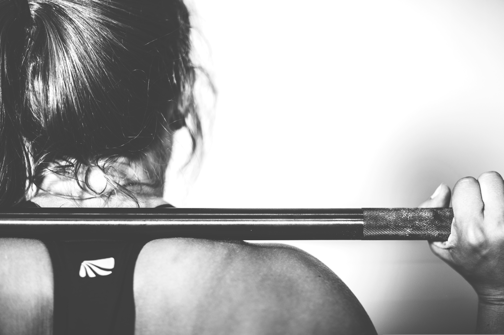
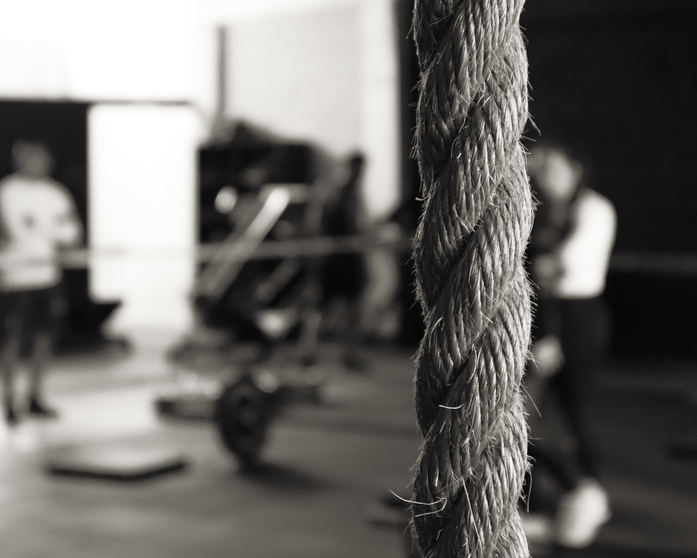

Träning och inspiration
Här hittar allt kring min träning
Filosofi
Min träningsfilosofi har följande principer:
- Varje muskelgrupp bör tränas varje vecka
- Men inte nödvändigtvis på samma vis varje gång - variation är eftersträvansvärt
- Framsteg kräver att träningen är på en nivå över din befintliga nivå
- Utan en plan riskerar du därför att missa framsteg
- Du bör ha en plan för varje träningspass, men också genomtänkta medel- och långsiktiga mål

Mina mål
Mina nuvarande mål är fokuserade på att bemästra särskilda övningar (se nedan). Det viktigaste med målsättningen är att du tycker målen är roliga att följa upp, snarare än en börda.
| Toes-to-bar | Pull-ups | Handstand | Löpning |
|---|---|---|---|
| 10 reps obrutet | 20 reps obrutet (kipping) | 10 sek fristående hållning | 5 km under 25 min |
| 15 reps obrutet | 15 reps obrutet (strikt) | 1 rep oassisterad push-up | 10 km under 50 min |
| 20 reps obrutet | 10 reps obrutet (C2B, kipping) | 10 m handstand-walk | 1,6 km under 6 min |

Dagens träningspass
Här lägger jag upp mitt senaste träningspass:
2026-09-06
- WARMUP
- 5 min mobility
- 4 min cardio (roddmaskin)
- MAIN - 20 min AMRAP
- 5 TTB
- 5 Burpees
- 5 Box-jumps
- FINISHER - no time, repeat x3 - upper body strength
- Max time HS hold
- Max time dead-hang
- Max rep push-ups
Externa resurser
Följande resurser använder jag för inspiration: